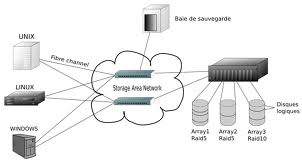

Un Network Attached Storage (NAS) è un dispositivo collegato ad una rete di computer la cui funzione è quella di condividere tra gli utenti della rete una memoria di massa, in pratica costituita da uno o più dischi rigidi.Generalmente i NAS sono dei computer attrezzati con il necessario per poter comunicare via rete. Si tratta di dispositivi dotati solitamente di un sistema operativo basato su Linux (generalmente trasparente all'utente) e di diversi hard disk destinati all'immagazzinamento dei dati. Tale architettura ha il vantaggio di rendere disponibili i file contemporaneamente su diverse piattaforme, come ad esempio Linux, Windows e Unix (o Mac OS X), dove il sistema operativo implementa i server di rete con gli standard più diffusi tra i quali ad esempio FTP, Network File System (NFS), Samba per le reti Windows e AFP per le reti Mac OS X. Questi dispositivi non vanno scambiati con gli Storage Area Network (SAN); questi ultimi sono soluzioni di immagazzinamento dati (storage) ben differenti: tali sistemi comprendono una rete e fanno riferimento a tecnologie e protocolli spesso proprietari. Talvolta un sistema NAS può essere utilizzato come nodo di una SAN, data la scalabilità di tale architettura.
Una Storage Area Network (SAN) è una rete o parte di una rete ad alta velocità di trasmissione (generalmente Gigabit/sec) costituita esclusivamente da dispositivi di memorizzazione di massa, in alcuni casi anche di tipi e tecnologie differenti. Il suo scopo è quello di rendere tali risorse di immagazzinamento (storage) disponibili per qualsiasi computer (generalmente application server e DDBB server) connesso ad essa.[1] I protocolli attualmente più diffusi, usati per la comunicazione all'interno di una SAN, sono FC (Fibre Channel) ed iSCSI (Internet SCSI). Più precisamente, il dizionario tecnico pubblicato dalla Storage Networking Industry Association (SNIA) definisce una rete SAN nei seguenti termini: « Una rete il cui scopo principale è il trasferimento di dati tra sistemi di computer ed elementi di storage e tra elementi di storage. Una rete SAN consiste in un’infrastruttura di comunicazione, che fornisce connessioni fisiche e in un livello di gestione, che organizza connessioni, elementi di storage e sistemi di computer in modo da garantire un trasferimento di dati sicuro e robusto. »
